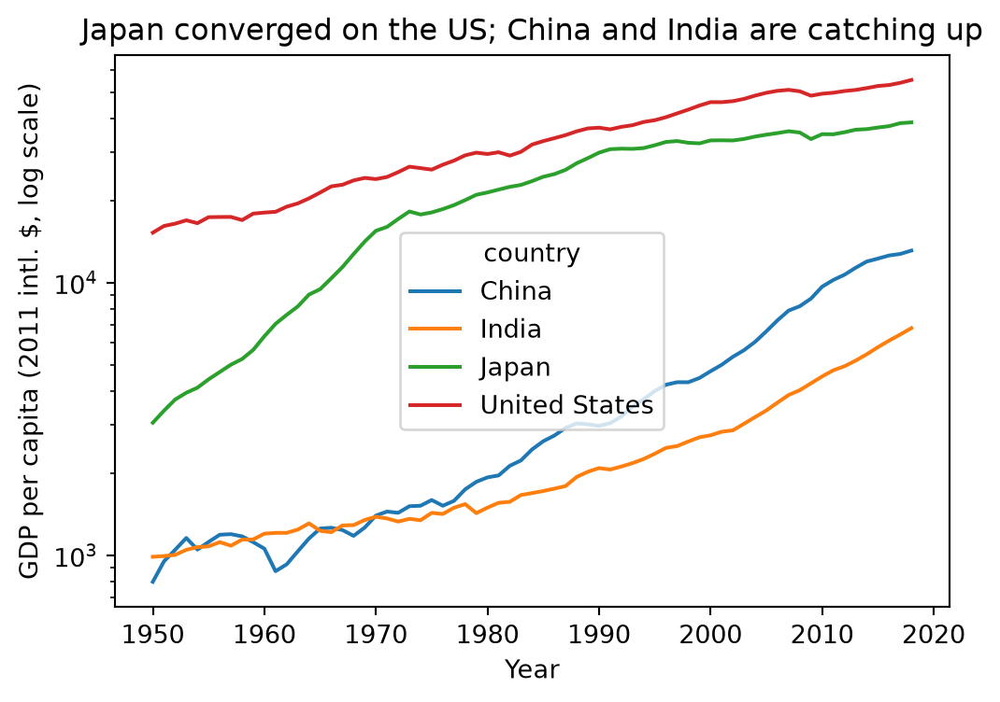

import numpy as np
import pandas as pd
import matplotlib.pyplot as plt
from pathlib import Path
# The course data live in the site repo's data folder. In Colab, read them from GitHub instead.
DATA = "../data" if Path("../data").exists() else "https://raw.githubusercontent.com/WSU-EconS431/site/main/data"Week 4: pandas for economic data
Open in Colab · View on GitHub
So far the data in this course has been numbers we typed or drew at random. Real economic data arrives as tables: rows of countries, firms, or quarters, and columns of variables with units and gaps. pandas is the Python tool for tables. It selects rows by condition (like Week 3’s Boolean masks), computes new columns, summarizes by group, and combines tables.
After this week you can:
- load a CSV file into a DataFrame and check its shape, types, units, and gaps before using it
- select columns and rows, including by condition, and sort
- create new columns and handle missing values without distorting an average
- summarize by group with
groupbyand combine two tables withmerge, checking row counts - reshape between long and wide tables and work with dates
All the data this week are real, from the course’s data folder. data/README.md gives each source, the download date, and any changes.
1. Series and DataFrames
A DataFrame is a table: named columns, one value per row in each. Each column is a Series, which is like a Week 3 array that also carries row labels (the index). We start with a made-up table of a market’s prices and quantities by year.
market = pd.DataFrame({
"year": [2019, 2020, 2021, 2022],
"price": [28.0, 24.5, 31.0, 36.5],
"quantity": [52, 61, 47, 40],
})
market| year | price | quantity | |
|---|---|---|---|
| 0 | 2019 | 28.0 | 52 |
| 1 | 2020 | 24.5 | 61 |
| 2 | 2021 | 31.0 | 47 |
| 3 | 2022 | 36.5 | 40 |
Arithmetic on columns works on every row at once, as with arrays, and assigning to a new name creates a column:
market["revenue"] = market["price"] * market["quantity"]
print(market.shape, list(market.columns))
print("mean price:", market["price"].mean(), " highest revenue:", market["revenue"].max())
market(4, 4) ['year', 'price', 'quantity', 'revenue']
mean price: 30.0 highest revenue: 1494.5| year | price | quantity | revenue | |
|---|---|---|---|---|
| 0 | 2019 | 28.0 | 52 | 1456.0 |
| 1 | 2020 | 24.5 | 61 | 1494.5 |
| 2 | 2021 | 31.0 | 47 | 1457.0 |
| 3 | 2022 | 36.5 | 40 | 1460.0 |
Setting a column as the index lets you look rows up by label. .loc[row label, column name] is the label-based lookup:
by_year = market.set_index("year")
by_year.loc[2021, "price"]np.float64(31.0)2. Loading a real dataset
The Maddison Project Database (2020 release) estimates GDP per capita and population for 169 countries over a very long span. gdppc is GDP per capita in 2011 international dollars (adjusted so a dollar buys the same amount in every country), and pop is population in thousands. Check the units before computing anything.
mpd = pd.read_csv(f"{DATA}/mpd2020_full.csv")
mpd.head()| countrycode | country | year | gdppc | pop | |
|---|---|---|---|---|---|
| 0 | AFG | Afghanistan | 1820 | NaN | 3280.0 |
| 1 | AFG | Afghanistan | 1870 | NaN | 4207.0 |
| 2 | AFG | Afghanistan | 1913 | NaN | 5730.0 |
| 3 | AFG | Afghanistan | 1950 | 1156.0 | 8150.0 |
| 4 | AFG | Afghanistan | 1951 | 1170.0 | 8284.0 |
print(mpd.shape)
mpd.info()(21682, 5)
<class 'pandas.DataFrame'>
RangeIndex: 21682 entries, 0 to 21681
Data columns (total 5 columns):
# Column Non-Null Count Dtype
--- ------ -------------- -----
0 countrycode 21682 non-null str
1 country 21682 non-null str
2 year 21682 non-null int64
3 gdppc 19706 non-null float64
4 pop 17199 non-null float64
dtypes: float64(2), int64(1), str(2)
memory usage: 847.1 KBmpd.describe()| year | gdppc | pop | |
|---|---|---|---|
| count | 21682.000000 | 19706.000000 | 1.719900e+04 |
| mean | 1880.124297 | 6693.285574 | 2.980356e+04 |
| std | 187.856176 | 10111.643395 | 9.842090e+04 |
| min | 1.000000 | 0.000000 | 2.000000e+00 |
| 25% | 1861.000000 | 1553.000000 | 2.235000e+03 |
| 50% | 1954.000000 | 2794.000000 | 5.830000e+03 |
| 75% | 1986.000000 | 7099.541625 | 1.889884e+04 |
| max | 2018.000000 | 156299.000000 | 1.385439e+06 |
Look at the min of gdppc: it is 0.0, but no country has zero GDP per capita. Find those rows:
mpd[mpd['gdppc'] <= 0]| countrycode | country | year | gdppc | pop | |
|---|---|---|---|---|---|
| 293 | ARE | United Arab Emirates | 1991 | 0.0 | 1934.841255 |
| 294 | ARE | United Arab Emirates | 1992 | 0.0 | 2050.441137 |
Two rows, the United Arab Emirates in 1991 and 1992, have a GDP per capita of zero and a population of about two million. That is almost certainly a placeholder for “no estimate”, not a real zero, and it would break any calculation with logs (np.log(0) is \(-\infty\)). We treat these as missing in our working copy. The snapshot file stays exactly as downloaded, and the change is recorded here, in the notebook.
mpd.loc[mpd["gdppc"] <= 0, "gdppc"] = np.nan
print("smallest gdppc now:", mpd["gdppc"].min())smallest gdppc now: 295.0Three questions to ask of any new table, before any analysis:
- What is a row? Here, one country in one year. The same country appears many times.
- What are the units? Dollars per person, thousands of people.
- What is covered? The
yearcolumn starts at 1, and some countries start much later than others.
print("countries:", mpd["country"].nunique())
print("years:", mpd["year"].min(), "to", mpd["year"].max())
mpd[mpd["country"].str.startswith("Former")]["country"].unique()countries: 169
years: 1 to 2018<StringArray>
['Former USSR', 'Former Yugoslavia']
Length: 2, dtype: strLook at that last result: some rows describe regions that no longer exist as countries (the “Former” rows), and the successor countries, such as the Russian Federation, appear as rows of their own. Adding up rows across countries would count that territory twice. Reading the data’s documentation is part of the analysis.
3. Selecting columns and rows
One column in brackets gives a Series; a list of column names gives a DataFrame:
print(mpd["gdppc"].head(3))
mpd[["country", "year", "gdppc"]].head(3)0 NaN
1 NaN
2 NaN
Name: gdppc, dtype: float64| country | year | gdppc | |
|---|---|---|---|
| 0 | Afghanistan | 1820 | NaN |
| 1 | Afghanistan | 1870 | NaN |
| 2 | Afghanistan | 1913 | NaN |
A comparison gives a Boolean mask, exactly as in Week 3, and putting the mask inside the brackets keeps the rows where it is True. Combine conditions with & (and), | (or), and ~ (not), with parentheses around each condition:
usa = mpd[mpd["countrycode"] == "USA"]
japan_recent = mpd[(mpd["country"] == "Japan") & (mpd["year"] >= 2000)]
print(usa.shape, japan_recent.shape)
japan_recent.head(3)(227, 5) (19, 5)| countrycode | country | year | gdppc | pop | |
|---|---|---|---|---|---|
| 10626 | JPN | Japan | 2000 | 33210.8078 | 126933.1312 |
| 10627 | JPN | Japan | 2001 | 33246.3921 | 127234.3736 |
| 10628 | JPN | Japan | 2002 | 33195.4005 | 127502.5894 |
Python’s and doesn’t work here, for the same reason if didn’t work on arrays in Week 3: a comparison on a column gives many True/False values, not one.
mpd[(mpd["country"] == "Japan") and (mpd["year"] >= 2000)]--------------------------------------------------------------------------- ValueError Traceback (most recent call last) Cell In[13], line 1 ----> 1 mpd[(mpd["country"] == "Japan") and (mpd["year"] >= 2000)] File ~\EconS431\instructor\.venv\Lib\site-packages\pandas\core\generic.py:1501, in NDFrame.__bool__(self) 1499 @final 1500 def __bool__(self) -> NoReturn: -> 1501 raise ValueError( 1502 f"The truth value of a {type(self).__name__} is ambiguous. " 1503 "Use a.empty, a.bool(), a.item(), a.any() or a.all()." 1504 ) ValueError: The truth value of a Series is ambiguous. Use a.empty, a.bool(), a.item(), a.any() or a.all().
.query writes the same filter as a string, and .loc[rows, columns] picks rows and columns together. .sort_values orders the rows; .isin tests membership in a list.
print(mpd.query("year == 2018 and gdppc > 60000")[["country", "gdppc"]])
y2018 = mpd[mpd["year"] == 2018]
rich = y2018.sort_values("gdppc", ascending=False)
print(rich[["country", "gdppc"]].head(5))
y2018.nsmallest(5, "gdppc")[["country", "gdppc"]] country gdppc
320 United Arab Emirates 76397.8181
2699 Switzerland 61372.7301
9228 Ireland 64684.3020
11106 Kuwait 65520.7367
14560 Norway 84580.1362
17166 Qatar 153764.1643
17797 Singapore 68402.3451
country gdppc
17166 Qatar 153764.1643
14560 Norway 84580.1362
320 United Arab Emirates 76397.8181
17797 Singapore 68402.3451
11106 Kuwait 65520.7367| country | gdppc | |
|---|---|---|
| 2336 | Central African Republic | 623.4889 |
| 1084 | Burundi | 651.3589 |
| 11319 | Liberia | 818.4211 |
| 3361 | D.R. of the Congo | 859.3817 |
| 13498 | Niger | 964.6601 |
big3 = mpd[mpd["country"].isin(["China", "India", "Japan"])]
big3["country"].value_counts()country
China 243
Japan 212
India 208
Name: count, dtype: int644. New columns, units, and a gotcha
Total GDP is GDP per capita times population. Since pop is in thousands, \(\text{gdppc} \times \text{pop}\) is in thousands of dollars, and dividing by \(10^6\) gives billions of dollars. Writing the unit in a comment is a good habit.
mpd["gdp"] = mpd["gdppc"] * mpd["pop"] / 1e6 # billions of 2011 international dollars
mpd["log_gdppc"] = np.log(mpd["gdppc"])
y2018 = mpd[mpd["year"] == 2018] # re-select so it has the new columns
y2018.nlargest(5, "gdp")[["country", "gdppc", "pop", "gdp"]]| country | gdppc | pop | gdp | |
|---|---|---|---|---|
| 3152 | China | 13101.7064 | 1.385439e+06 | 18151.620437 |
| 20752 | United States | 55334.7394 | 3.278347e+05 | 18140.645383 |
| 9026 | India | 6806.4986 | 1.298136e+06 | 8835.757695 |
| 18263 | Former USSR | 19539.1474 | 2.944740e+05 | 5753.769948 |
| 10644 | Japan | 38673.8081 | 1.258477e+05 | 4867.010473 |
China’s total GDP just exceeds the United States’ in 2018 on this measure, while its GDP per capita is about a quarter as large. Level and total are different questions.
Gotcha: mpd.pop is not the pop column. pop is also the name of a DataFrame method, so the dot shortcut mpd.pop gives you the method. Always use brackets for column names: mpd["pop"]. (y2018 is a separate copy of the rows; changing it does not change mpd.)
type(mpd.pop), type(mpd['pop'])(method, pandas.Series)Why logs? The difference of logs, \(\ln y_t - \ln y_{t-1}\), is approximately the growth rate of \(y\) (a log difference of \(0.02\) is about \(2\%\) growth), and equal distances on a log scale are equal percentage changes. Economists use logs for GDP, prices, and populations constantly; Week 5 draws figures with them.
5. Missing data
Missing values are stored as NaN (“not a number”). Count them before deciding what to do:
print(mpd[["gdppc", "pop"]].isna().mean().round(3)) # share missing
modern = mpd[mpd["year"] >= 1950].copy()
coverage = modern.groupby("year")["gdppc"].count() # count() counts non-missing values
print(coverage.loc[[1950, 1970, 1990, 2018]])gdppc 0.091
pop 0.207
dtype: float64
year
1950 145
1970 153
1990 169
2018 169
Name: gdppc, dtype: int64Before 1950 many countries have no estimate, and even since 1950 the number of countries with data changes from year to year (the sample changes, which matters when you compare a year-1950 average with a year-2018 average).
Most pandas summaries skip missing values by default. Filling them in is a different matter: don’t replace missing with 0. A missing GDP is not a GDP of zero.
print("skip missing:", round(mpd["gdppc"].mean(), 1))
print("fillna(0): ", round(mpd["gdppc"].fillna(0).mean(), 1))
print("keep complete rows only:", len(mpd.dropna(subset=["gdppc"])), "of", len(mpd))skip missing: 6694.0
fillna(0): 6083.3
keep complete rows only: 19704 of 216826. Summaries by group: groupby
groupby splits the table into pieces (one per year, country, region), applies a summary to each, and combines the results. The median is often better than the mean for incomes, because a few very rich countries pull the mean up:
by_year = modern.groupby("year")["gdppc"].agg(["count", "median", "mean"])
by_year.loc[[1950, 1980, 2018]].round(0)| count | median | mean | |
|---|---|---|---|
| year | |||
| 1950 | 145 | 2174.0 | 3927.0 |
| 1980 | 167 | 6384.0 | 8616.0 |
| 2018 | 169 | 12310.0 | 19012.0 |
To compute growth within each country, sort by country and year and take a difference inside each group. groupby(...).diff() subtracts the previous row of the same country, so the first row of each country is missing:
modern = modern.sort_values(["countrycode", "year"])
modern["growth"] = modern.groupby("countrycode")["log_gdppc"].diff() # log difference, about a growth rate
modern["decade"] = (modern["year"] // 10) * 10
(modern.groupby("decade")["growth"].median() * 100).round(2) # median annual growth, percentdecade
1950 2.25
1960 2.97
1970 2.80
1980 1.06
1990 2.27
2000 3.54
2010 2.24
Name: growth, dtype: float64The median country’s growth was weakest in the 1980s and strongest in the 2000s. (The 1950s row covers only 1951–59, and the 2010s row only 2011–18. Check what growth means where a country has a gap in its years: the difference then spans more than one year. Here the years since 1950 are annual wherever they are present.)
7. Combining tables: merge
country_groups.csv is a small table that assigns 26 of the countries to a world region. To attach regions to the GDP data, merge the tables on their shared key, countrycode:
groups = pd.read_csv(f"{DATA}/country_groups.csv")
print(groups.head(3))
left = y2018.merge(groups, on="countrycode", how="left") # keep every row of y2018
inner = y2018.merge(groups, on="countrycode", how="inner") # keep only rows found in both
print(len(y2018), len(left), len(inner))
print("rows with no region in the left merge:", left["region"].isna().sum()) countrycode region
0 USA Western Offshoots
1 CAN Western Offshoots
2 AUS Western Offshoots
169 169 26
rows with no region in the left merge: 143how="left" keeps all the country rows and puts NaN where there’s no match; how="inner" keeps only the matches. After every merge, compare row counts with what you expected. The most common merge bug is a key that is not unique in one of the tables, which silently multiplies rows. Adding validate="many_to_one" makes pandas check, and indicator=True records where each row came from.
check = mpd.merge(groups, on="countrycode", how="left", validate="many_to_one", indicator=True)
print(check["_merge"].value_counts())
dup = pd.concat([groups, groups.iloc[[0]]]) # the USA listed twice by mistake
print("extra rows from the duplicate key:", len(mpd.merge(dup, on="countrycode", how="left")) - len(mpd))_merge
left_only 15032
both 6650
right_only 0
Name: count, dtype: int64
extra rows from the duplicate key: 227mpd.merge(dup, on="countrycode", how="left", validate="many_to_one")--------------------------------------------------------------------------- MergeError Traceback (most recent call last) Cell In[24], line 1 ----> 1 mpd.merge(dup, on="countrycode", how="left", validate="many_to_one") File ~\EconS431\instructor\.venv\Lib\site-packages\pandas\core\frame.py:12902, in DataFrame.merge(self, right, how, on, left_on, right_on, left_index, right_index, sort, suffixes, copy, indicator, validate) 12898 self._check_copy_deprecation(copy) 12899 12900 from pandas.core.reshape.merge import merge 12901 > 12902 return merge( 12903 self, 12904 right, 12905 how=how, File ~\EconS431\instructor\.venv\Lib\site-packages\pandas\core\reshape\merge.py:385, in merge(left, right, how, on, left_on, right_on, left_index, right_index, sort, suffixes, copy, indicator, validate) 371 return _cross_merge( 372 left_df, 373 right_df, (...) 382 validate=validate, 383 ) 384 else: --> 385 op = _MergeOperation( 386 left_df, 387 right_df, 388 how=how, 389 on=on, 390 left_on=left_on, 391 right_on=right_on, 392 left_index=left_index, 393 right_index=right_index, 394 sort=sort, 395 suffixes=suffixes, 396 indicator=indicator, 397 validate=validate, 398 ) 399 return op.get_result() File ~\EconS431\instructor\.venv\Lib\site-packages\pandas\core\reshape\merge.py:1037, in _MergeOperation.__init__(self, left, right, how, on, left_on, right_on, left_index, right_index, sort, suffixes, indicator, validate) 1033 # If argument passed to validate, 1034 # check if columns specified as unique 1035 # are in fact unique. 1036 if validate is not None: -> 1037 self._validate_validate_kwd(validate) File ~\EconS431\instructor\.venv\Lib\site-packages\pandas\core\reshape\merge.py:2019, in _MergeOperation._validate_validate_kwd(self, validate) 2017 elif validate in ["many_to_one", "m:1"]: 2018 if not right_unique: -> 2019 raise MergeError( 2020 "Merge keys are not unique in right dataset; " 2021 "not a many-to-one merge\n" 2022 f"{right_error_msg(right_join_index)}" 2023 ) 2025 elif validate in ["many_to_many", "m:m"]: 2026 pass MergeError: Merge keys are not unique in right dataset; not a many-to-one merge Duplicates in right: countrycode USA ...
inner.groupby("region")["gdppc"].median().sort_values().round(0)region
Sub-Saharan Africa 5238.0
South and South East Asia 8139.0
Middle East and North Africa 15614.0
Latin America 16494.0
Eastern Europe 24669.0
East Asia 37928.0
Western Europe 38287.0
Western Offshoots 49831.0
Name: gdppc, dtype: float648. Long and wide tables
mpd is long: one row per country and year. For plotting several countries over time, or for subtracting one year from another, a wide table (one row per year, one column per country) is easier. pivot reshapes long to wide, and melt goes back.
wide = mpd.pivot(index="year", columns="country", values="gdppc")
wide.loc[[1950, 1990, 2018], ["China", "India", "Japan", "United States"]].round(0)| country | China | India | Japan | United States |
|---|---|---|---|---|
| year | ||||
| 1950 | 799.0 | 987.0 | 3062.0 | 15240.0 |
| 1990 | 2982.0 | 2087.0 | 29949.0 | 36982.0 |
| 2018 | 13102.0 | 6806.0 | 38674.0 | 55335.0 |
With a wide table, the average annual growth rate of every country from 1990 to 2018 is one line: \(\bigl(\ln y_{2018} - \ln y_{1990}\bigr)/28\).
growth_90_18 = (np.log(wide.loc[2018]) - np.log(wide.loc[1990])) / (2018 - 1990)
print((growth_90_18.sort_values(ascending=False).head(5) * 100).round(2))
print("median country:", round(growth_90_18.median() * 100, 2), "% per year")country
Qatar 9.20
Equatorial Guinea 8.73
Kuwait 6.80
Mongolia 6.58
Bahrain 6.42
dtype: float64
median country: 2.18 % per yearSeveral of the fastest growers are small, resource-rich economies; a high growth rate is not a recipe to copy. melt turns a wide table back into long form:
wide[["China", "India"]].loc[2016:].reset_index().melt(id_vars="year", var_name="country", value_name="gdppc")| year | country | gdppc | |
|---|---|---|---|
| 0 | 2016 | China | 12569.0000 |
| 1 | 2017 | China | 12733.9314 |
| 2 | 2018 | China | 13101.7064 |
| 3 | 2016 | India | 6125.0000 |
| 4 | 2017 | India | 6449.1134 |
| 5 | 2018 | India | 6806.4986 |
ax = wide.loc[1950:, ["China", "India", "Japan", "United States"]].plot(logy=True, figsize=(6, 4))
ax.set_xlabel("Year")
ax.set_ylabel("GDP per capita (2011 intl. $, log scale)")
ax.set_title("Japan converged on the US; China and India are catching up")
plt.show()
DataFrame.plot draws with Matplotlib and returns the same ax you used in Week 3, so the labeling steps are unchanged. Week 5 builds figures like this one with care.
9. Dates and time series
us_macro_1959_2009.csv has US quarterly data. Dates are the natural index for a time series. Here we build one from the year and quarter columns:
us = pd.read_csv(f"{DATA}/us_macro_1959_2009.csv")
us["date"] = pd.PeriodIndex.from_fields(year=us["year"], quarter=us["quarter"], freq="Q").to_timestamp()
us = us.set_index("date")
us[["realgdp", "unemp"]].head(3)| realgdp | unemp | |
|---|---|---|
| date | ||
| 1959-01-01 | 2710.349 | 5.8 |
| 1959-04-01 | 2778.801 | 5.1 |
| 1959-07-01 | 2775.488 | 5.3 |
With a date index you can slice by period, compute changes over a number of quarters, take rolling averages, and aggregate to years:
us["gdp_growth"] = us["realgdp"].pct_change(4) * 100 # growth over the past 4 quarters (a year), percent
print(us.loc["2007":"2009", ["realgdp", "gdp_growth", "unemp"]].round(1))
print(us["unemp"].rolling(4).mean().tail(3).round(2)) # moving average of the last 4 quarters
us["realgdp"].resample("YE").mean().tail(3).round(0) # average within each year realgdp gdp_growth unemp
date
2007-01-01 13099.9 1.4 4.5
2007-04-01 13204.0 1.9 4.5
2007-07-01 13321.1 2.7 4.7
2007-10-01 13391.2 2.5 4.8
2008-01-01 13366.9 2.0 4.9
2008-04-01 13415.3 1.6 5.4
2008-07-01 13324.6 0.0 6.0
2008-10-01 13141.9 -1.9 6.9
2009-01-01 12925.4 -3.3 8.1
2009-04-01 12901.5 -3.8 9.2
2009-07-01 12990.3 -2.5 9.6
date
2009-01-01 6.60
2009-04-01 7.55
2009-07-01 8.45
Name: unemp, dtype: float64date
2007-12-31 13254.0
2008-12-31 13312.0
2009-12-31 12939.0
Freq: YE-DEC, Name: realgdp, dtype: float6410. Habits for working with data
- Look first:
shape,head,info,describe. Check units and coverage. - Name the unit in a comment or a column name (
gdp_billions). - After every merge, compare row counts, and use
validate=. - Don’t fill missing values with 0, and say what you did with them.
- Re-run from the top (Restart and Run All) before you trust a result.
11. In-class lab
The exercises for this week are in Lab 4. It appears in the lab04 folder of your repository at the start of the second class session (pull to see it), and you work on it in pairs.
This week
- Read Python Programming for Economics and Finance: 17. Pandas.
- PS04 (wrangling the Maddison data) is in the
ps04folder of your repo. - Week 5 turns these tables into figures.